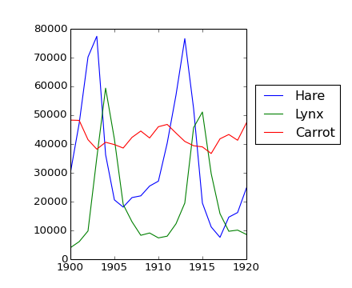

Contenido
Con escalares
>>> a = np.array([1, 2, 3, 4])
>>> a + 1
array([2, 3, 4, 5])
>>> 2**a
array([ 2, 4, 8, 16])
Toda las operaciones aritméticas son elemento a elemento
>>> b = np.ones(4) + 1
>>> a - b
array([-1., 0., 1., 2.])
>>> a * b
array([ 2., 4., 6., 8.])
>>> j = np.arange(5)
>>> 2**(j + 1) - j
array([ 2, 3, 6, 13, 28])
Advertencia
Multiplicación de arreglos no es multiplicación matricial:
>>> c = np.ones((3, 3))
>>> c * c # no es multiplicación matricial!
array([[ 1., 1., 1.],
[ 1., 1., 1.],
[ 1., 1., 1.]])
Nota
Multiplicación matricial:
>>> c.dot(c) # tambien, np.dot(c, c)
array([[ 3., 3., 3.],
[ 3., 3., 3.],
[ 3., 3., 3.]])
Comparaciones
>>> a = np.array([1, 2, 3, 4])
>>> b = np.array([4, 2, 2, 4])
>>> a == b
array([False, True, False, True], dtype=bool)
>>> a > b
array([False, False, True, False], dtype=bool)
Operaciones logicas
>>> a = np.array([1, 1, 0, 0], dtype=bool)
>>> b = np.array([1, 0, 1, 0], dtype=bool)
>>> np.logical_or(a, b)
array([ True, True, True, False], dtype=bool)
>>> np.logical_and(a, b)
array([ True, False, False, False], dtype=bool)
Desajustes de forma
>>> a = np.arange(4)
>>> a + np.array([1, 2])
Traceback (most recent call last):
File "<stdin>", line 1, in <module>
ValueError: operands could not be broadcast together with shapes (4) (2)
Broadcasting? lo veremos despues.
Transposición
>>> a = np.triu(np.ones((3, 3)), 1) # ver help(np.triu)
>>> a
array([[ 0., 1., 1.],
[ 0., 0., 1.],
[ 0., 0., 0.]])
>>> a.T # tambien, a.transpose()
array([[ 0., 0., 0.],
[ 1., 0., 0.],
[ 1., 1., 0.]])
Nota
Algebra linear
El submódulo numpy.linalg implementa el álgebra lineal básico, como resolución de sistemas lineales, descomposición en valores singulares, etc. Sin embargo, esto no garantiza que sea compilado utilizando rutinas eficientes, y por lo tanto se recomienda el uso de scipy.linalg, como se detalla en la sección Operaciones de álgebra lineal: scipy.linalg
Ejercicio
Generar los arreglos [2**0, 2**1, 2**2, 2**3, 2**4] y a_j = 2^(3*j) - j
Cálculando sumas
>>> x = np.array([1, 2, 3, 4])
>>> np.sum(x)
10
>>> x.sum()
10

Suma por filas y por columnas
>>> x = np.array([[1, 1], [2, 2]])
>>> x
array([[1, 1],
[2, 2]])
>>> x.sum(axis=0) # columna (primera dimensión)
array([3, 3])
>>> x[:, 0].sum(), x[:, 1].sum()
(3, 3)
>>> x.sum(axis=1) # fila (segunda dimensión)
array([2, 4])
>>> x[0, :].sum(), x[1, :].sum()
(2, 4)
Truco
El mismo procedimiento para arreglos multidimensionales
>>> x = np.random.rand(2, 2, 2)
>>> x.sum(axis=2)[0, 1]
1.14764...
>>> x[0, 1, :].sum()
1.14764...
Otras reducciones — funcionan de la misma manera (también axis=)
Estadística
>>> x = np.array([1, 2, 3, 1])
>>> y = np.array([[1, 2, 3], [5, 6, 1]])
>>> x.mean()
1.75
>>> np.median(x)
1.5
>>> np.median(y, axis=-1) # la ultima dimensión
array([ 2., 5.])
>>> x.std() # desviación estándar de población (no muestra).
0.82915619758884995
Valores extremos
>>> x = np.array([1, 3, 2])
>>> x.min()
1
>>> x.max()
3
>>> x.argmin() # índice del valor mínimo
0
>>> x.argmax() # índice del valor máximo
1
Operaciones lógicas
>>> np.all([True, True, False])
False
>>> np.any([True, True, False])
True
Nota
Puede ser usado para comparar arreglos
>>> a = np.zeros((100, 100))
>>> np.any(a != 0)
False
>>> np.all(a == a)
True
>>> a = np.array([1, 2, 3, 2])
>>> b = np.array([2, 2, 3, 2])
>>> c = np.array([6, 4, 4, 5])
>>> ((a <= b) & (b <= c)).all()
True
... y muchos más (mejor para aprender sobre la marcha).
Ejemplo: datos estadísticos
Datos en populations.txt describe las poblaciones de liebres y linces (y zanahorias) en el norte de Canadá durante 20 años.
Primero graficamos los datos
>>> datos = np.loadtxt('data/populations.txt')
>>> year, liebres, linces, zanahorias = datos.T # truco: columnas a variables
>>> import matplotlib.pyplot as plt
>>> plt.axes([0.2, 0.1, 0.5, 0.8])
<matplotlib.axes.Axes object at ...>
>>> plt.plot(year, liebres, year, linces, year, zanahorias)
[<matplotlib.lines.Line2D object at ...>, ...]
>>> plt.legend(('Liebre', 'Lince', 'Zanahoria'), loc=(1.05, 0.5))
<matplotlib.legend.Legend object at ...>
>>> plt.show()
[source code, hires.png, pdf]
La media de cada población son
>>> poblaciones = datos[:, 1:]
>>> poblaciones.mean(axis=0)
array([ 34080.95238095, 20166.66666667, 42400. ])
Las desviaciones estándar son
>>> poblaciones.std(axis=0)
array([ 20897.90645809, 16254.59153691, 3322.50622558])
Qué especie tiene la mayor población cada año?
>>> np.argmax(poblaciones, axis=1)
array([2, 2, 0, 0, 1, 1, 2, 2, 2, 2, 2, 2, 0, 0, 0, 1, 2, 2, 2, 2, 2])
Si no se comprende lo anterior imprimimos los índices:
>>> for fila, columna in enumerate(np.argmax(poblaciones, axis=1)):
... print fila, columna
...
0 2
1 2
2 0
3 0
4 1
5 1
6 2
7 2
8 2
9 2
10 2
11 2
12 0
13 0
14 0
15 1
16 2
17 2
18 2
19 2
20 2
Ejemplo: simulación de difusión usando el algoritmo random walk
Cuál es la distancia típica al origen en un recorrido al azar después de t saltos a la derecha o izquierda?

>>> numero_recorridos = 1000 # número de recorridos
>>> tiempo_maximo = 200 # tiempo de duración de cada recorrido
Elegimos al azar todos los pasos 1 o -1 del recorrido
>>> tiempo = np.arange(tiempo_maximo)
>>> pasos = 2 * np.random.random_integers(0, 1, (numero_recorridos, tiempo_maximo)) - 1
>>> np.unique(pasos) # Verificación: todos los pasos son 1 o -1
array([-1, 1])
Construimos los recorridos como la suma de los pasos a lo largo del tiempo
>>> posiciones = np.cumsum(pasos, axis=1) # eje = 1: dimensión tiempo
>>> distancias_al_cuadrado = posiciones**2
Obtenemos la media en el eje de los recorridos
>>> media_distancias_al_cuadrado = np.mean(distancias_al_cuadrado, axis=0)
graficamos el resultado
>>> plt.figure(figsize=(8, 6))
<matplotlib.figure.Figure object at ...>
>>> plt.plot(tiempo, np.sqrt(media_distancias_al_cuadrado), 'g.', tiempo, np.sqrt(tiempo), 'y-')
[<matplotlib.lines.Line2D object at ...>, <matplotlib.lines.Line2D object at ...>]
>>> plt.xlabel(r'$tiempo$')
<matplotlib.text.Text object at ...>
>>> plt.ylabel(r'$\sqrt{\Delta x^{2}}$')
<matplotlib.text.Text object at ...>
>>> plt.show()
[source code, hires.png, pdf]
La distancia RMS (raíz media cuadrática) crece como la raíz cuadrada del tiempo!
Operaciones básicas en arreglos numpy (suma, etc) son elemento a elemento.
Esto funciona con arreglos del mismo tamaño.
No obstante!, también es posible hacer operaciones con matrices de diferentes tamaños si Numpy puede transformar estos arreglos en arreglos del mismo tamaño: esta conversión se llama broadcasting.
La siguiente imagen muestra un ejemplo de broadcasting:

Vamos a verificarlo
>>> a = np.tile(np.arange(0, 40, 10), (3, 1)).T
>>> a
array([[ 0, 0, 0],
[10, 10, 10],
[20, 20, 20],
[30, 30, 30]])
>>> b = np.array([0, 1, 2])
>>> a + b
array([[ 0, 1, 2],
[10, 11, 12],
[20, 21, 22],
[30, 31, 32]])
Un truco útil
>>> a = np.arange(0, 40, 10)
>>> a.shape
(4,)
>>> a = a[:, np.newaxis] # adds a new axis -> 2D array
>>> a.shape
(4, 1)
>>> a
array([[ 0],
[10],
[20],
[30]])
>>> a + b
array([[ 0, 1, 2],
[10, 11, 12],
[20, 21, 22],
[30, 31, 32]])
Ya hemos usado broadcasting sin saberlo!
>>> a = np.ones((4, 5))
>>> a[0] = 2 # we assign an array of dimension 0 to an array of dimension 1
>>> a
array([[ 2., 2., 2., 2., 2.],
[ 1., 1., 1., 1., 1.],
[ 1., 1., 1., 1., 1.],
[ 1., 1., 1., 1., 1.]])
Truco
El broadcasting parece un poco mágico, pero en realidad es bastante natural usarlo cuando queremos resolver un problema cuya salida de datos es una matriz con más dimensiones que los datos de entrada.
Ejemplo
Vamos a construir un arreglo de distancias (en millas) entre las ciudades de la Ruta 66: Chicago, Springfield, Saint-Louis, Tulsa, Oklahoma City, Amarillo, Santa Fe, Albuquerque, Flagstaff y Los Angeles.
>>> mileposts = np.array([0, 198, 303, 736, 871, 1175, 1475, 1544,
... 1913, 2448])
>>> distance_array = np.abs(mileposts - mileposts[:, np.newaxis])
>>> distance_array
array([[ 0, 198, 303, 736, 871, 1175, 1475, 1544, 1913, 2448],
[ 198, 0, 105, 538, 673, 977, 1277, 1346, 1715, 2250],
[ 303, 105, 0, 433, 568, 872, 1172, 1241, 1610, 2145],
[ 736, 538, 433, 0, 135, 439, 739, 808, 1177, 1712],
[ 871, 673, 568, 135, 0, 304, 604, 673, 1042, 1577],
[1175, 977, 872, 439, 304, 0, 300, 369, 738, 1273],
[1475, 1277, 1172, 739, 604, 300, 0, 69, 438, 973],
[1544, 1346, 1241, 808, 673, 369, 69, 0, 369, 904],
[1913, 1715, 1610, 1177, 1042, 738, 438, 369, 0, 535],
[2448, 2250, 2145, 1712, 1577, 1273, 973, 904, 535, 0]])
Una gran cantidad de problemas basados en mallas o redes también puede utilizar broadcasting. Por ejemplo, si queremos calcular la distancia de el origen de los puntos en una cuadrícula de 10x10, se puede hacer
>>> x, y = np.arange(5), np.arange(5)
>>> distance = np.sqrt(x ** 2 + y[:, np.newaxis] ** 2)
>>> distance
array([[ 0. , 1. , 2. , 3. , 4. ],
[ 1. , 1.41421356, 2.23606798, 3.16227766, 4.12310563],
[ 2. , 2.23606798, 2.82842712, 3.60555128, 4.47213595],
[ 3. , 3.16227766, 3.60555128, 4.24264069, 5. ],
[ 4. , 4.12310563, 4.47213595, 5. , 5.65685425]])
O en colores
>>> plt.pcolor(distance)
<matplotlib.collections.PolyCollection object at ...>
>>> plt.colorbar()
<matplotlib.colorbar.Colorbar instance at ...>
>>> plt.axis('equal')
(0.0, 200.0, 0.0, 16.0)
[source code, hires.png, pdf]
Observación: la función numpy.ogrid permite crear directamente vectores x e y del ejemplo anterior, con dos “dimensiones significativas”
>>> x, y = np.ogrid[0:5, 0:5]
>>> x, y
(array([[0],
[1],
[2],
[3],
[4]]), array([[0, 1, 2, 3, 4]]))
>>> x.shape, y.shape
((5, 1), (1, 5))
>>> distance = np.sqrt(x ** 2 + y ** 2)
Truco
Por tanto, np.ogrid es muy útil para manejar cálculos sobre una malla. Por otro lado, np.mgrid proporciona directamente matrices llenas de índices para los casos en que no pueda (o no desee hacer) beneficiarse del broadcasting
>>> x, y = np.mgrid[0:4, 0:4]
>>> x
array([[0, 0, 0, 0],
[1, 1, 1, 1],
[2, 2, 2, 2],
[3, 3, 3, 3]])
>>> y
array([[0, 1, 2, 3],
[0, 1, 2, 3],
[0, 1, 2, 3],
[0, 1, 2, 3]])
Sin embargo, en la práctica, esto casi nunca se necesita!
>>> a = np.array([[1, 2, 3], [4, 5, 6]])
>>> a.ravel()
array([1, 2, 3, 4, 5, 6])
>>> a.T
array([[1, 4],
[2, 5],
[3, 6]])
>>> a.T.ravel()
array([1, 4, 2, 5, 3, 6])
Dimensiones superiores: las últimos dimensiones son las “primeras”.
La operación inversa a aplanar
>>> a.shape
(2, 3)
>>> b = a.ravel()
>>> b.reshape((2, 3))
array([[1, 2, 3],
[4, 5, 6]])
O,
>>> a.reshape((2, -1)) # unspecified (-1) value is inferred
Advertencia
ndarray.reshape puede devolver una vista (cf help(np.reshape))), o copia
Truco
>>> b[0, 0] = 99
>>> a
array([99, 1, 2, 3, 4, 5, 6, 7, 8, 9, 10, 11, 12, 13, 14, 15, 16,
17, 18, 19, 20, 21, 22, 23, 24, 25, 26, 27, 28, 29, 30, 31, 32, 33,
34, 35])
Cuidado: reshape también pueden devolver una copia!
>>> a = np.zeros((3, 2))
>>> b = a.T.reshape(3*2)
>>> b[0] = 9
>>> a
array([[ 0., 0.],
[ 0., 0.],
[ 0., 0.]])
Para entender, consulte la sección sobre :ref: el diseño de memoria de un arreglo más abajo.
Indexando con el objeto np.newaxis nos permite agregar un eje a un arreglo
>>> z = np.array([1, 2, 3])
>>> z
array([1, 2, 3])
>>> z[:, np.newaxis]
array([[1],
[2],
[3]])
>>> z[np.newaxis, :]
array([[1, 2, 3]])
>>> a = np.arange(4*3*2).reshape(4, 3, 2)
>>> a.shape
(4, 3, 2)
>>> a[0, 2, 1]
5
>>> b = a.transpose(1, 2, 0)
>>> b.shape
(3, 2, 4)
>>> b[2, 1, 0]
5
También crea una vista
>>> b[2, 1, 0] = -1
>>> a[0, 2, 1]
-1
El tamaño de un arreglo se puede cambiar con ndarray.resize
>>> a = np.arange(4)
>>> a.resize((8,))
>>> a
array([0, 1, 2, 3, 0, 0, 0, 0])
Sin embargo, no debe ser referenciado a otro objeto:
>>> b = a
>>> a.resize((4,))
Traceback (most recent call last):
File "<stdin>", line 1, in <module>
ValueError: cannot resize an array that has been referenced or is
referencing another array in this way. Use the resize function
Caso 2.a: Llamando código (legado) Fortran
Funciones y rutinas no Python. Por ejemplo, Fortran
! 2_a_fortran_module.f90
subroutine some_function(n, a, b)
integer :: n
double precision, dimension(n), intent(in) :: a
double precision, dimension(n), intent(out) :: b
b = a + 1
end subroutine some_function
Podemos utilizar f2py para envolver código Fortran en Python: f2py -c -m fortran_module 2_a_fortran_module.f90
import numpy as np
import fortran_module
def some_function(input):
"""
Call a Fortran routine, and preserve input shape
"""
input = np.asarray(input)
# fortran_module.some_function() takes 1-D arrays!
output = fortran_module.some_function(input.ravel())
return output.reshape(input.shape)
print some_function(np.array([1, 2, 3]))
print some_function(np.array([[1, 2], [3, 4]]))
# ->
# [ 2. 3. 4.]
# [[ 2. 3.]
# [ 4. 5.]]
Caso 2.b: Bloques de matrices y vectores (y tensores)
Vector espacio: nivel cuántico spin
En resumen: para bloques de matrices y vectores, puede ser útil preservar la estructura de bloque.
En Numpy
>>> psi = np.zeros((2, 2)) # dimensions: level, spin
>>> psi[0, 1] # <-- psi_{1,downarrow}
0.0
Los operadores lineales en tales bloques de vectores tienen una estructura de bloques similar:
>>> H = np.zeros((2, 2, 2, 2)) # dimensions: level1, level2, spin1, spin2
>>> h_11 = H[0,0,:,:]
>>> V = H[0,1]
Para hacer el producto matricial: nos deshacemos de la estructura de bloques, hacemos el producto de la matriz 4x4, a continuación de nuevo
>>> def mdot(operator, psi):
... return operator.transpose(0, 2, 1, 3).reshape(4, 4).dot(
... psi.reshape(4)).reshape(2, 2)
Es decir, cambiamos el orden de las dimensiones primero a level1, spin1, level2, spin2 y luego reshape => producto matriz correcto.
Ordenando a lo largo de un eje
>>> a = np.array([[4, 3, 5], [1, 2, 1]])
>>> b = np.sort(a, axis=1)
>>> b
array([[3, 4, 5],
[1, 1, 2]])
Nota
Ordena filas y columnas por separado!
Ordenar y reemplazar
>>> a.sort(axis=1)
>>> a
array([[3, 4, 5],
[1, 1, 2]])
Ordenar con indexado fancy
>>> a = np.array([4, 3, 1, 2])
>>> j = np.argsort(a)
>>> j
array([2, 3, 1, 0])
>>> a[j]
array([1, 2, 3, 4])
Buscando los valores mínimos y máximos
>>> a = np.array([4, 3, 1, 2])
>>> j_max = np.argmax(a)
>>> j_min = np.argmin(a)
>>> j_max, j_min
(0, 2)
Ejercicio: Ordenado
Qué es lo necesita saber para empezar?
>>> a[a < 0] = 0

{kind=link}
{kind=link}
{kind=link}
{kind=link}